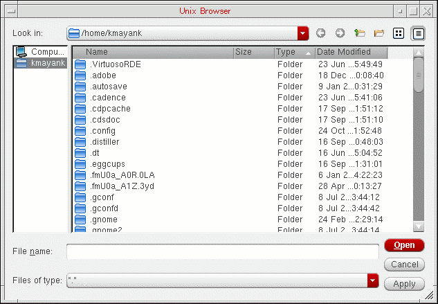

4
Preparing Files for Use with a Design
This chapter discusses the following:
- The Technology File Manager and User Interface
- Displaying the Incremental Technology Database Graph
- Generating a New Technology Library
- Referencing or Attaching a Technology Library
- Ensuring Desired Display Resource File Usage
The Technology File Manager and User Interface
The technology file manager provides a user interface that allows you to create technology databases and manipulate technology data in virtual memory during a design session.
Invoking the Technology File Manager
To start the technology file manager from the CIW, choose Tools – Technology File Manager.
The technology file manager displays the Technology File Manager.
SKILL Functions to Display Form
techManagerOpenTechToolBox()
Technology File Manager Commands
The Technology File Manager commands let you compile, dump, and edit technology data. This section introduces the Technology File Manager commands.
Edit Techfile opens the Techfile IDE in which you can create, edit, and view technology files.
TechDB Checker inspects an OpenAccess technical database that was created by compiling a Virtuoso ASCII technology file using the Virtuoso Technology File Manager. It helps you check if the technology database has all necessary data to function with Cadence tools. For details, see the Virtuoso Technology Database Checker User Guide.
New creates a new technology library by compiling an ASCII technology file, copying an existing binary technology library, or referencing other technology libraries. It also loads the new technology library into virtual memory.
Attach assigns a technology library to another technology or design library.
Load compiles an ASCII technology file into an existing technology library and loads it into virtual memory.
Dump writes a technology database from virtual memory to an ASCII technology file and opens the ASCII file in an editor window for you to view and edit.
Save writes a technology database in virtual memory to the technology database on disk. You can make whatever changes you want to the technology database in virtual memory without changing the permanent copy on disk by not saving. If you want the changes preserved in the technology database, you must save to disk.
Discard deletes the current technology data from virtual memory and reloads technology data to virtual memory from disk.
Set Reference lets you establish a library containing only references to other libraries that you select and order.
Install Device invokes the Install Device form.
Graph displays the incremental technology database graph for the current local technology database.
Guard Ring is a special type of ROD multipart path that are used to encircle one or more objects.
Displaying the Incremental Technology Database Graph
You can display the incremental technology database graph for the selected technology database at any time. To do so,
-
From the Technology File Toolbox, choose Graph.
The Technology Database Graph form is displayed. -
From the Library pull-down menu, choose the technology library whose graph you want to display.All technology databases in the graph must be open for the software to display the entire graph. If they are not open, the software displays the following message box:Clicking Yes opens the referenced databases and displays the Technology Database Graph form.
For a description of this form, see Appendix A.
Effective and As Defined Graph Displays
The Effective radio button is selected by default and displays the effective technology database graph.
Any technology database that is referenced multiple times in a graph shows up only once in the effective graph. Its location is the first place in the graph where it will be encountered by software using the graph. (See Database Reference Ordering.)
Turning on the As Defined radio button displays the graph showing every reference originally defined in the technology databases.
In this example, TechLib1 is referenced by TechLib2, TechLib3, and TechLib4. In the Effective display, TechLib1 is shown only once. Since TechLib6 references TechLib2 first, the TechLib2 reference to TechLib1 is displayed in the graph. In the As Defined display, its reference from each of the three other technology databases is shown, but represented by a different icon at the two extra references to indicate that it is repeated.
When you click an icon, the Status line displays information about the selected database, as shown in the following example:
Conflicts in Graph Displays
Conflicts detected at compilation time are never allowed to exist because the compilation process displays a message and aborts. It is, however, possible to introduce conflicts with closed databases higher in the graph when making changes to technology databases when only some of the databases are open. Once the affected databases are open, any conflicts then become apparent. In the Technology Database Graph, such conflicts are identified by a red X next to the highest database in the graph affected by the conflict (which is not necessarily the database containing the conflicting data). For example, in the following graph, TechLib6 is flagged as having a conflict. In this case, with only TechLib1 and TechLib2 open (that is, working with TechLib2 as the entry point in the graph with all other databases closed), merging a technology file containing technology data already defined in TechLib5, for example, is accomplished without any problem. However, when subsequently working with TechLib6, the conflict between TechLib2 and TechLib5 is identified. TechLib6 is flagged with the X because the conflict is applicable through the top of the graph due to the technology database references.
Generating a New Technology Library
The Technology File Manager provides the following methods for generating a new technology database (library):
- compiling an ASCII technology file into a technology library
- copying an existing technology library to a technology library of a different name
- creating a technology library containing references to other technology libraries
Compiling an ASCII Technology File into a Technology Database (Library)
To create a technology library from an ASCII technology file, do the following:
-
From the Technology File Manager, choose New.
The New Technology Library form appears.
For a description of this form, see Appendix A. - In the Technology Library Name field, type the name of the new technology library you want to create.
- Click Load ASCII Technology File.
-
Type the name of the ASCII technology file to compile or select it by using the browser. The UNIX browser dialog box is displayed.
 - Choose the directory in which to create the new technology library.
- If you want to use a design management system, choose the design manager from the Design Manager cyclic field.
-
Click OK.
The system compiles the ASCII file and creates the new technology library. The new library directory contains the binary technology database file calledtech.dband cellviews of the devices defined in the ASCII technology file.
Creating a New Technology Library from an Existing Technology Library
You can create a new technology library by copying an existing technology library to a new library of a different name. You can then edit the new library for other purposes or to add to a different incremental technology database graph.
-
From the Technology File Manager, choose New.
The New Technology Library form appears.
- In the Technology Library Name field, type the name of the new technology library to create.
-
Click Copy From Existing Technology Library.
-
In the list box, highlight the technology library you want to copy.
For a description of this form, see Appendix A. - Choose the directory in which you want to create the new technology library.
-
Click OK.
The system copies the existing technology library to the new technology library.
Creating a New Technology Library that References Existing Technology Libraries
You can create a new technology library that references one or more other technology libraries. If you are creating a new library that reference existing technology libraries, the technology database of the library is kept in the read-only mode.
When copying libraries within an ITDB graph, if one or more of the libraries that is referenced is missing, the copy is still completed. A warning displays in the CIW indicating that a referenced library is missing.
-
From the Technology File Manager, choose New.
The New Technology Library form appears.
- In the Technology Library Name field, type the name of the new technology library to create.
-
Click Reference Existing Technology Libraries.
-
Click Apply or OK.
The Reference Existing Technology Libraries form appears.
For a description of this form, see Appendix A. -
(ICADVM20.1 Only – Virtuoso MultiTech Framework) In the Types field, select the kinds of libraries to show. By default, all libraries are shown and the value is set to
All. You can selectPackageorICto see only the relevant set of libraries. - For each technology library you want to reference, in the order in which you want them referenced (top to bottom):
-
Click OK.
The system creates the new library, which contains only references to the selected reference libraries, whose reference libraries then also come along with their existing graph structure. You can add technology data to this library.
Referencing or Attaching a Technology Library
Any library can either reference a technology library or attach to a technology library. A design library must do one or the other to have access to technology data during a design session. A technology library can also reference or attach to another technology library; alternatively, it can be standalone by doing neither, using only the cdsDefTechLib default technology data. Choosing whether to reference or attach a technology library depends upon whether or not designers need to specify technology data during their design sessions.
- Referencing a technology database from a design library or another technology library protects the integrity of any read-only data in the effective technology library while providing a writable local library where designers can define technology data. Referencing is preferable to attachment when designers need a writable local technology database in which to add technology data (such as data output by LEFIN).
-
Attaching is preferable in cases where designers use only predefined technology data, which is typically read-only.Virtuoso does not allow a technology library that has a local technology file to be attached to another technology library. When you try to do this, it issues error
TECH-2000203. You need to ether detach the second library by usingtechUnattachTechFile(ddGetObj(<otherTechLibraryName>))or remove the local technology file by usingtechDeleteTechFile(techGetTechFile(ddGetObj(<techLibraryName>)). For more information about these functions, see Virtuoso Technology Data SKILL Reference.
Referencing a Technology Library from a Design Library
You can set up a reference from a design library to a technology library with the Library Manager or from the CIW when you create a new library. For details, refer to the Cadence Library Manager User Guide and the Virtuoso Design Environment User Guide.
Attaching a Technology Library to a Design Library
To attach a technology library to a design library:
-
From the Technology File Manager, choose Attach.
The Attach Technology Library to Design Library form appears.
For a description of this form, see Appendix A. - In the Design Library field, select the design library to which you want to attach the technology library.
-
(ICADVM20.1 Only – Virtuoso MultiTech Framework) In the Types field, select the kinds of libraries to show. By default, all libraries are shown and the value is set to
All. You can selectPackageorICto see only the relevant set of libraries. - From the Technology Library field, choose the library containing the technology library you want to attach to the design library.
-
Click OK.
The technology library is attached to the design library.
Ensuring Desired Display Resource File Usage
Keep in mind how the software loads and uses display resource files upon initialization to ensure that you are using display resources in the way you want. For details, refer to “How Cadence Design Software Handles Multiple Display Resource Files”.
Return to top